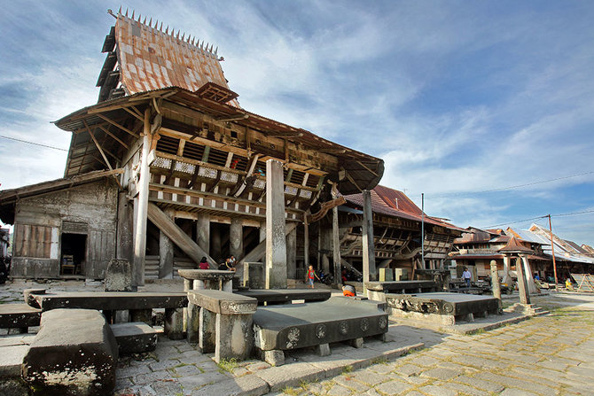
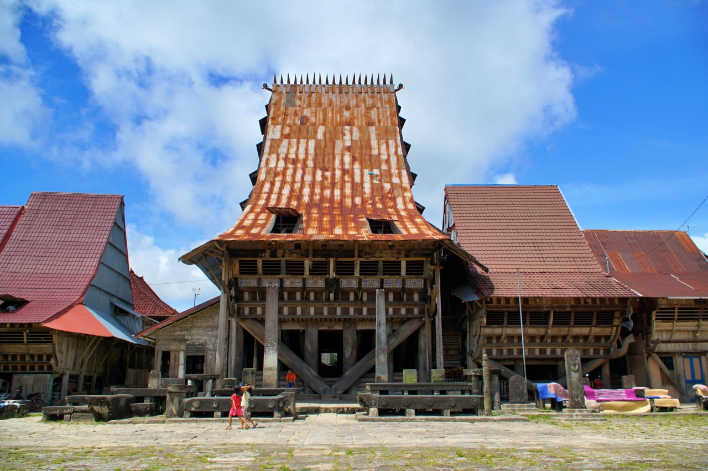
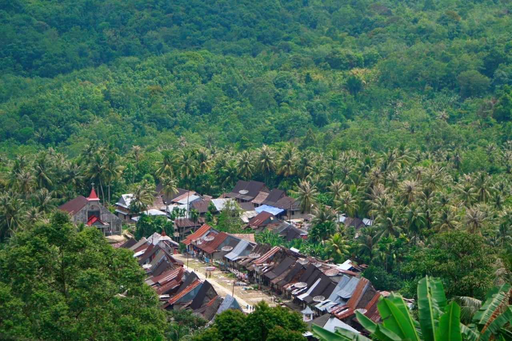
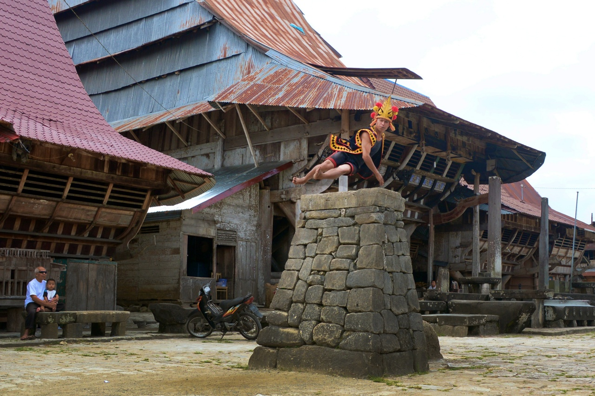

Tempat Wisata
Rumah Adat Desa Bawomataluo
Rumah panggung tradisional orang Nias, khususnya Nias Selatan

Rumah panggung tradisional orang Nias, khususnya Nias Selatan
Rumah adat Bawomataluo (terutama Omo Sebua atau rumah raja) dibangun pada tahun 1863 olehcRaja Saonigeho di Nias Selatan. Desa lama bernama Orahili Fau dibakar habis oleh kolonial Belanda. Warga kemudian pindah ke atas bukit dan mendirikan desa baru bernama Bawomataluo (Bukit Matahari) sebagai benteng pertahanan. Omo Sebua (Rumah Besar) menjadi istana sekaligus pusat pemerintahan adat.Sementara Omo Gada adalah rumah adat untuk masyarakat biasa.Bangunan ini tahan gempa karena dibangun tanpa paku besi, melainkan menggunakan sistem pasak kayu yang fleksibel. Di halaman rumah raja terdapat tumpukan batu tinggi untuk tradisi Lompat Batu (Fahombo) yang dulu menjadi latihan prajurit perang.
← Kembali


1.Menyaksikan Tradisi Lompat Batu Legendaris
2. Melihat Megahnya Omo Sebua (Rumah Raja
3. Atmosfer Desa Adat Kental Sejarah
4.Kaya dengan Peninggalan Megalitikum
5.Kandidat Warisan Budaya Dunia UNESCO
← Kembali
Desa Bwaomataluo, Kecamatan Fanayama
Kab. Nias Selatan, Sumatera Utara
Booking WA: 0822-6752-5324
Hubungi kami melalui WhatsApp:
📱 Chat WhatsAppKecamatan Fanayama, Kabupaten Nias Selatan, Sumatera Utara